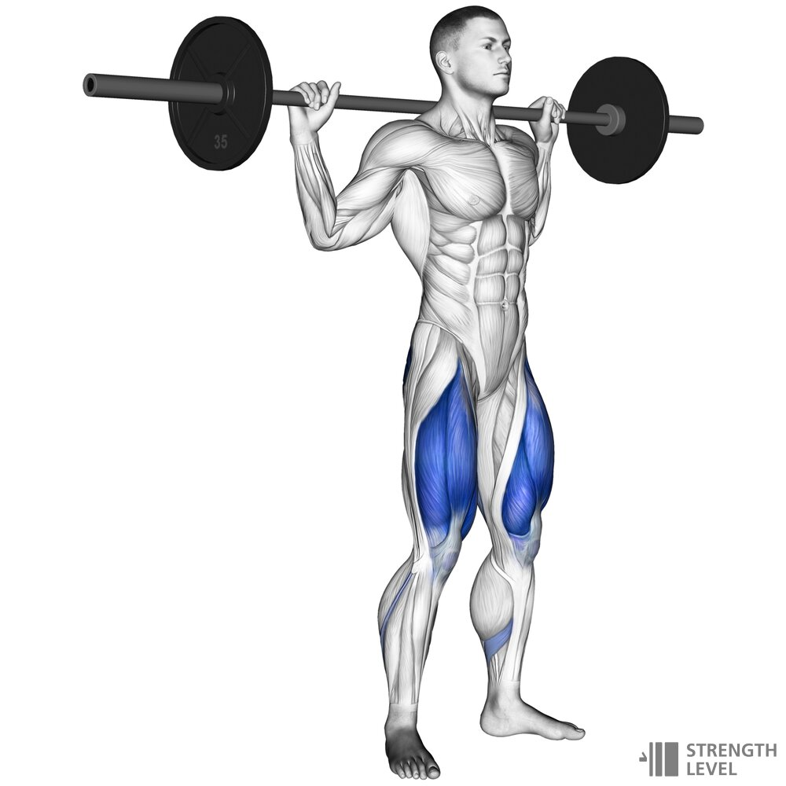
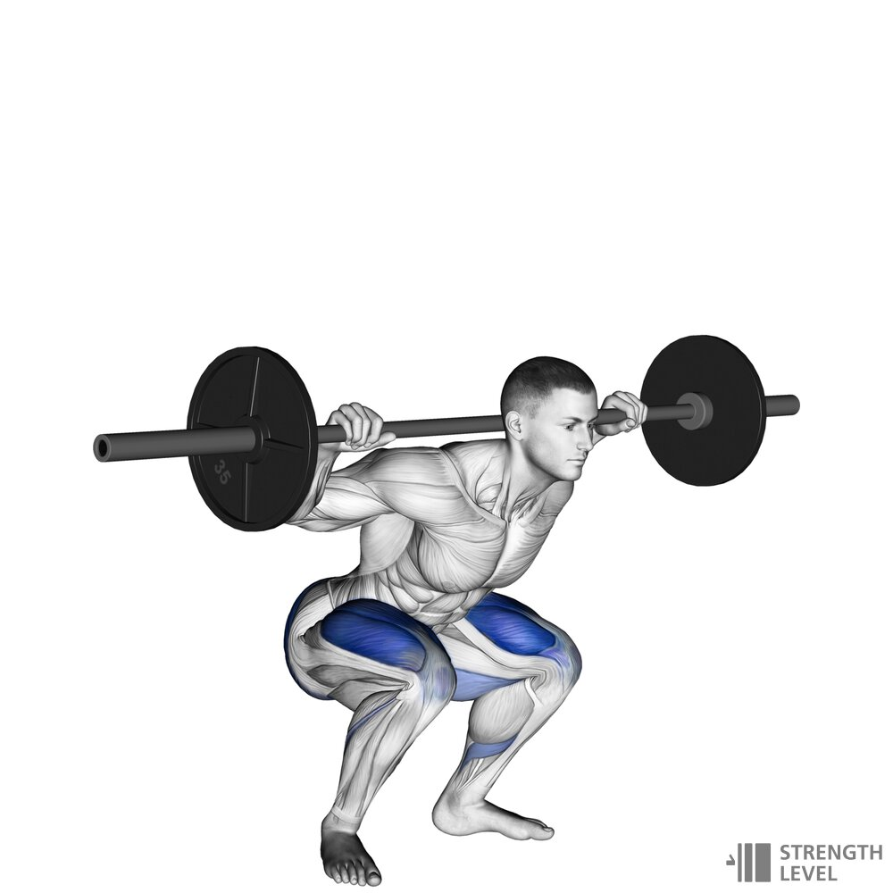
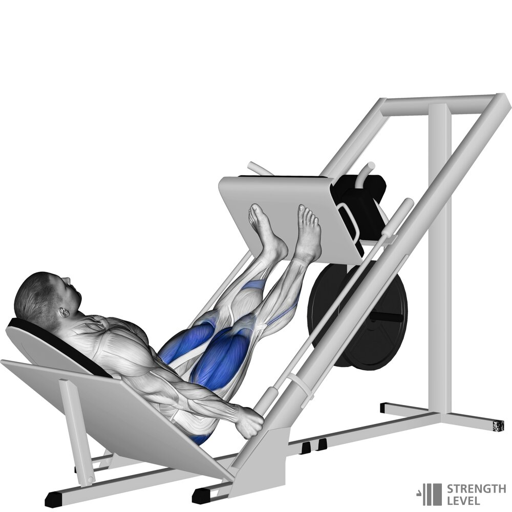
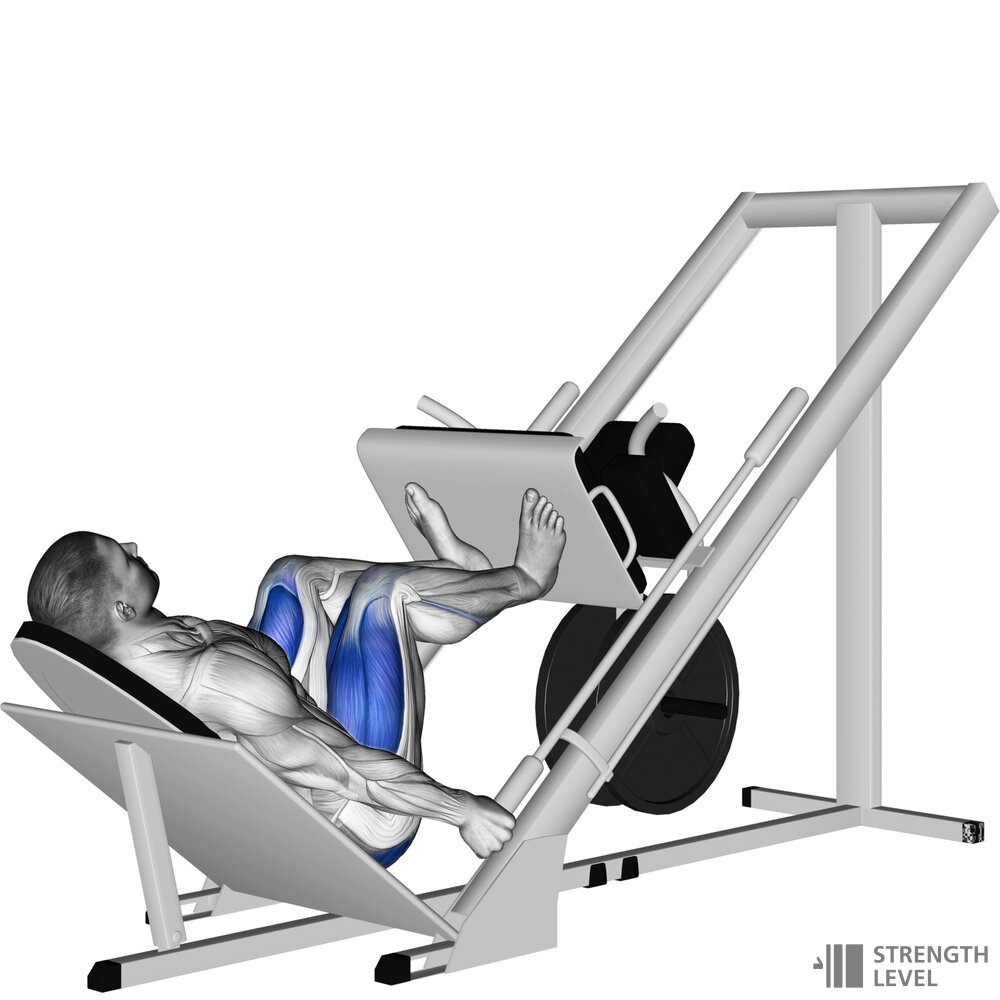
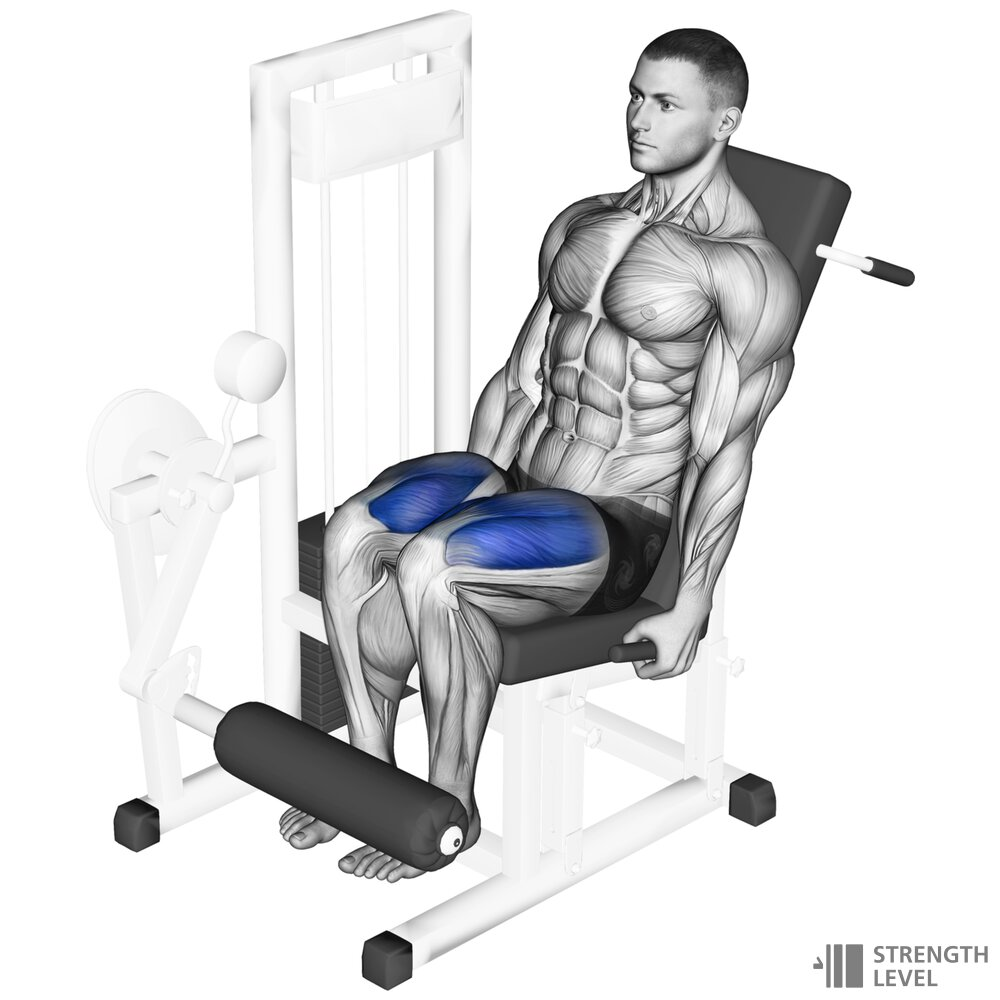
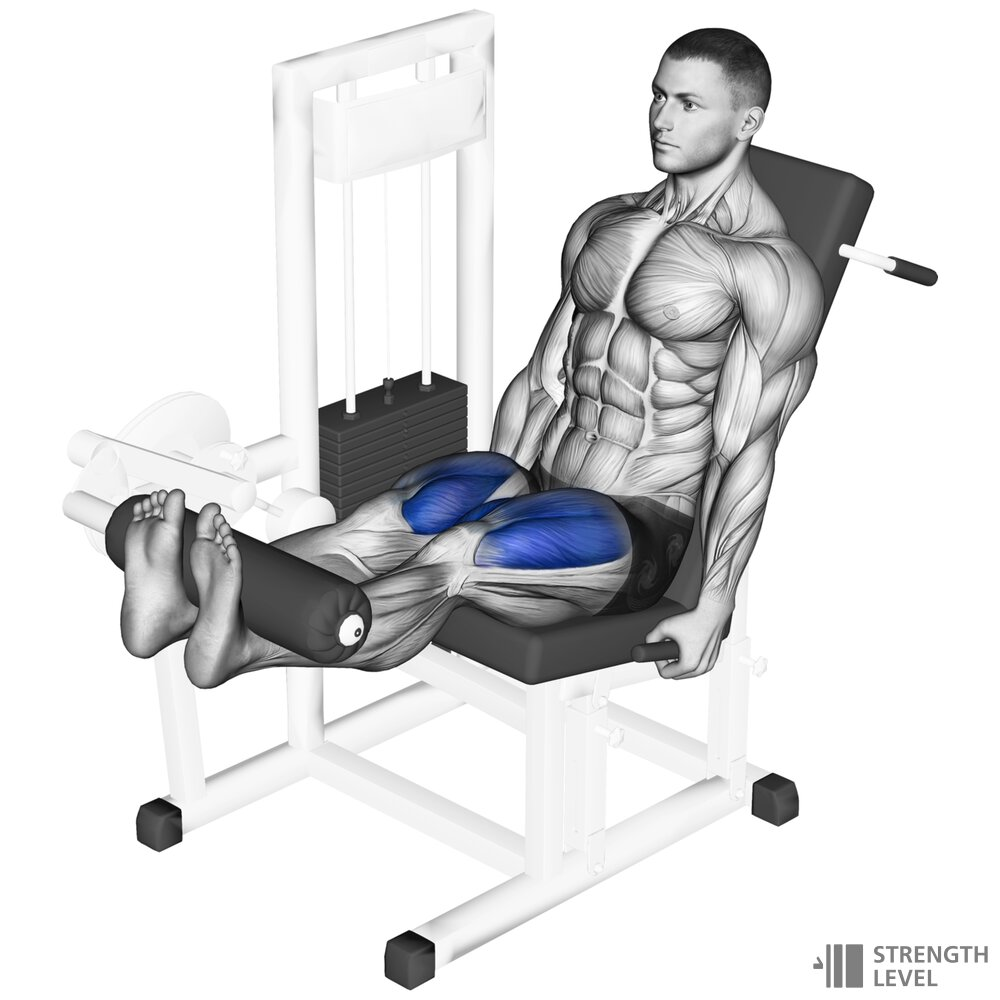

1.Przysiady
 
1.Grip the barbell and stand up to lift it off the rack
2.Step back with each leg until you are clear of the rack, setting up your footing for the lift
3.Lower yourself until your thighs are at most parallel to the floor
4.Raise yourself back up to standing
5.Step forward to rerack the barbell
2.Wyciskanie nogami
 
1.Begin by loading up the sled with weight plates
2.Lay back on the machine and place your feet at hip-width halfway up the sled
3.Push your legs to full extension and release the handle
4.Lower the sled until your knees are at least at a right angle
5.Push the sled back to full extension and repeat
6.Lock the sled before getting up
3.Prostowanie kolan
 
1.Sit on the leg extension machine and set up the seat and footrest
2.Select your weight
3.Ready your feet under the footrest
4.Push equally with both legs until your legs are straight
5.Lower the legs and stop before the weight stack hits the bottom before repeating
6.Lock the sled before getting up